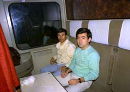
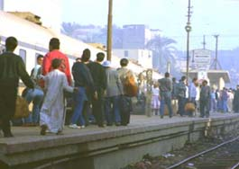
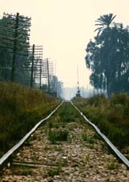

 会社の数人とアレキサンドリアからカイロまでは車で行き、カイロからルクソールへ鉄道で行くことになった。 列車は寝台である、知人と二人相部屋になる。列車はドイツ製で作りががっしりしている、椅子も日本人には大きい。 夕食が運ばれてきた、期待通りの物で食器はアルマイトの仕切がついた皿が１枚だけである。内容は忘れたが、エジ プト人一般庶民が食べていると思われるもので日本人の口には合わない。早々と寝ることにした。ベッドは上下二段 で下に寝させて貰った。割と広い作りである。列車はさほどスピードを出しているようには感じない、多分６０〜８ ０km/hr位であろう。寝て気が付いた、列車は縦に激しく揺れている。日本ではほとんど横にしか揺れない、縦揺れは 初めてでありこの縦揺れは激しく寝付けない。脱線するのではないかとひやひやしたがいつの間にか寝てしまった。 朝５時頃に激しい揺れで目が覚める、あぁ生きていたと実感する。６時頃ようやく目的地ルクソールについた。旅はこ れから始まる。 踏切でレールを見たら縦に波打っていた、これなら激しい縦揺れをすると妙に納得した。 空気の熱によるしんきろうで曲がっているように見えるのではなく、本当に上下に波打っていた。 |